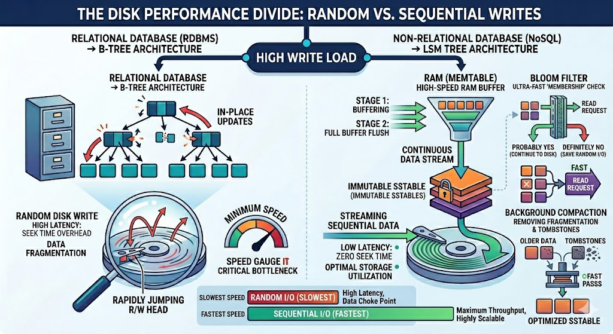
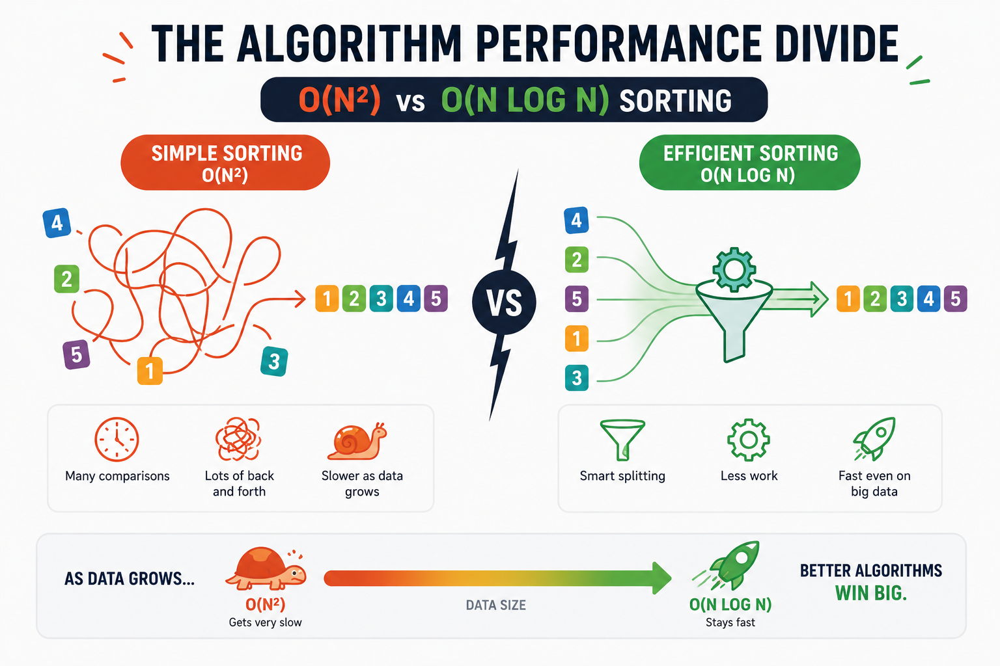

What is actually slowing your database down?
Before replacing a database, it helps to know which trade-off is hurting you. This is a practical look at the structures underneath the systems we use every day.
A slow database rarely announces one clean cause. Maybe p95 climbed after the working set stopped fitting in memory. Maybe writes are waiting on locks. Maybe an index that worked for ten thousand rows is now doing far too much work.
At that point, moving to a different database can feel easier than diagnosing the current one. Sometimes it is the right call. Often it just exchanges one set of constraints for another. The useful question is more specific: which data structure or guarantee is costing us time?
1. The heavy friction of safety: the ACID tax
Before a database can be fast, it must be reliable. We demand it never lose our data, even if someone pulls the power plug mid-query. That safety net is ACID (Atomicity, Consistency, Isolation, Durability), and enforcing it is the main reason databases are historically slow.
Picture a banking app moving $100 from Alice to Bob — two operations: subtract from Alice, add to Bob.
- Atomicity makes it all-or-nothing. If the system fails midway, logs roll back the partial changes.
- Durability guarantees a committed transaction is permanent — achieved via Write-Ahead Logging (WAL), writing changes sequentially to a disk log before confirming the commit.
But the real execution cost is Isolation. When thousands of users transfer money at once, how do you stop them overwriting each other? The strictest level, Serializable, forces transactions into a single-file line as if each owned the whole database. Because that destroys throughput, databases offer weaker levels (Read Committed, Repeatable Read) — faster, but they open the door to concurrency anomalies:
- Dirty reads — B reads a value A wrote but hasn't committed; A rolls back, and B has processed data that never existed.
- Non-repeatable reads — A reads a row ($100), B updates and commits it ($80), A reads again in the same session and sees a different value.
- Phantom reads — A queries all transfers under $100; B inserts a new $50 record and commits; A reruns the query and new "phantom" rows appear.
Takeaway: traditional databases are structurally bound by the locks, concurrency checks, and synchronous disk logging required to keep your data safe.
2. Bypassing the disk: the single-threaded magic of Redis
If writing to disk and managing locks is the bottleneck, what if we remove the disk entirely? That's Redis — an in-memory database orders of magnitude faster than on-disk counterparts. But its speed isn't only RAM; it's a counterintuitive choice: Redis is primarily single-threaded.
Why would a high-performance database use one core? Think of multi-threading as a kitchen with 20 chefs — to stop them colliding (race conditions) or grabbing the same pan, you need locks. Under high concurrency, threads burn cycles waiting on locks (contention) and switching context. With one thread, Redis has no locks, no race conditions, no context switching. So how does one thread serve 100,000 concurrent requests without blocking?
- I/O multiplexing (epoll). Instead of a thread per connection, Redis uses OS calls like
epollto monitor tens of thousands of sockets inO(1). When a socket has data ready, it fires an event, the single thread handles it instantly and moves on. - RAM-native data structures. Freed from formatting data for disk blocks, Redis uses lean structures — e.g. skip lists (a probabilistic, layered linked list) for Sorted Sets, giving
O(log n)lookups and range queries without the overhead of rebalancing a physical tree.
3. The great disk divide: B-Trees vs LSM Trees
Eventually your data outgrows RAM (or your wallet outgrows the cost of keeping terabytes in memory) and you must write to disk. How a database lays data out on disk decides whether it's optimized for reads or writes. This is the fork in the road.
The read-optimized standard: the B-Tree (relational)
PostgreSQL, MySQL, and Oracle rely on the B-Tree (and its B+ Tree variant) — think of a massive, perfectly balanced filing cabinet. Data lives in fixed-size pages; internal nodes hold routing keys, leaves hold the data. Because the tree stays balanced, finding a record takes a small, predictable number of page lookups.
The flaw: a firehose of writes (millions of IoT logs, app clicks) is brutal. To insert, the DB must find the right page, load it, modify it, write it back — and split it when it fills. That's heavy random I/O, the disk head jumping everywhere. Under write-heavy load, B-Trees choke.
The write-optimized challenger: the LSM Tree (NoSQL)
To kill the write bottleneck, systems like Cassandra, RocksDB, and LevelDB adopted the Log-Structured Merge-Tree (LSM Tree). It never updates in place — it treats the disk as an append-only log.
- Mechanism. A write goes immediately to a sequential log (durability) and into an in-memory balanced tree, the MemTable.
- SSTable flush. When the MemTable hits a threshold (say 64MB), it's flushed to disk as an immutable SSTable (Sorted String Table). Since the data was already sorted in memory, the write is one continuous sequential I/O — fast on any media.
- The deletion quirk. SSTables are immutable, so you can't delete in place. Deleting a user writes a tombstone marker to the newest SSTable — so, counterintuitively, deleting data initially takes more space.

4. Taming LSM reads: compaction and Bloom filters
LSM Trees conquer writes but create a read problem: if a record was updated five times in an hour, it's now scattered across five SSTables. A single read may have to scan many files. Two background optimizations fix this.
Background compaction
An asynchronous process constantly tidies up: it reads multiple sorted SSTables sequentially, merges them (much like the merge phase of merge sort), keeps only the newest values, and discards stale data and tombstoned keys.
- Size-tiered compaction merges SSTables of similar sizes — tuned for write-heavy workloads.
- Leveled compaction splits storage into exponentially larger levels (
L1, L2, L3…), sharply limiting how many SSTables a read must check — tuned for reads, at the cost of more background I/O.

O(N log N) merge crushes an O(N²) approach. The structure you pick is an algorithmic bet.Bloom filters
To avoid reading disk blocks for keys that don't exist, every LSM level keeps a Bloom filter in memory — a space-efficient probabilistic structure. Ask it whether a key is in an SSTable and you get one of two answers:
- "Firm no" — the key is definitely not here; skip the disk read entirely, saving random I/O.
- "Probably yes" — it might be here; go read the file.
5. The specialists: indexes for non-standard queries
Once you see a database as a wrapper around data structures, it's clear some problems can't be solved by B-Trees or LSM Trees alone:
- Inverted index (search engines). To full-text search millions of documents (Elasticsearch), a normal index fails. An inverted index maps each word to the list of document IDs containing it — turning the data upside down for millisecond search.
- Suffix tree (pattern matching). Finds every occurrence of a complex string pattern across a huge corpus almost instantly.
- R-Tree (spatial data). "Find all drivers within a 3-mile box of me" defeats a B-Tree because coordinates are two-dimensional. An R-Tree indexes by nested geometric boundaries, making spatial queries efficient.
Choose the constraint you can live with
A migration can solve a real problem, but “horizontal scalability” always comes with constraints—often weaker transactions or fewer ways to model and query the data. Before changing systems, write down the bottleneck you can measure and ask:
- Can a cache (Redis) in front buy you months of runway?
- Can a read replica offload the heavy queries?
- Relational and transaction-heavy? Tune your B-Tree.
- Ingesting a relentless firehose of time-series logs? Embrace the LSM Tree.
There is no best database in isolation. There is only a workload, a set of guarantees, and a collection of constraints the team can operate. Start there.